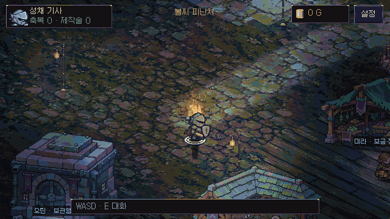

Tracefolio REPORTS & ISSUES
Tracefolio REPORTS & ISSUES DotAction수정사항
DotAction수정사항캐릭터 역광 오류 수정: 불을 등지면 몸통을 어둡게
검증 대기화면 좌표를 공간 높이로 취급하던 오류와 기본 밝기1을 수정해 불 뒤·앞의 명암을 실제 렌더에서 확인했습니다.
작업 결과
캐릭터 조명 역광 수정·저장·실제 Godot 렌더 확인 완료. 이전 보고는 역광 검증을 누락했으므로 정정합니다.
변경 내용
적용 내용
actor_relief.gdshader의 화면 XY+항상 양수 Z 광원을 폐기했습니다. 2:1 투영의 카메라 기저로 표면 방향을 공간 좌표로 변환하고, 노멀 알파의 발 기준 높이와 광원 바닥 기준점/높이를 이용해 광원 방향을 계산합니다. 밝기1에 빛을 더하던 방식 대신 약한 주변광 + max(N·L,0) 확산광을 사용합니다. town.gd의 모닥불·NPC 등불·가로등을 같은 좌표 규칙으로 연결했습니다. 아트 방향·절차·스타일·변경 이력과 프로젝트 역광 확인 지침을 동기화했습니다. 원본 이미지는 보존합니다.
검증
Godot4.7.2/GTX970 실제 렌더75프레임/12FPS 확인. 동일 자세로 불 아래(역광)와 위(순광)를 표시했습니다. 실제 캡처를 확인했으며 몸통 평균 표시 밝기는 역광0.3324367/순광0.4457106입니다. 캐시22개/광원21개. 별도 테스트·회귀는 수행하지 않았습니다. 참고한 공식 문서: https://docs.godotengine.org/en/4.7/tutorials/2d/2d_lights_and_shadows.html 및 canvas_item_shader.html.

남은 사항
자동 추정 노멀의 재질 정확도, 전체 클래스·NPC 개별 상황·체감 성능은 미확인입니다. 실제 3D 형상/광원 차폐 및 전투 FX 광원은 미구현입니다. 기존 종료 시 GL텍스처3개 해제 경고가 남습니다. EXE 빌드·게임 배포 미실행. 중앙 푸시·배포는 최종 응답에서 구분합니다.
작업 시간
- 제안 시간: 2026-11-17 18:59:59 KST 시작,8~10분.
- 실제로 완료된 시간: 구현·실제 렌더 확인 2026-11-17 19:02:13 KST, 실측2분14초. 보고서 작성은 이후 별도.
- XERJ: 미사용 — rg와 현재 소스로 좌표/노멀/광원 흐름을 확인했습니다.